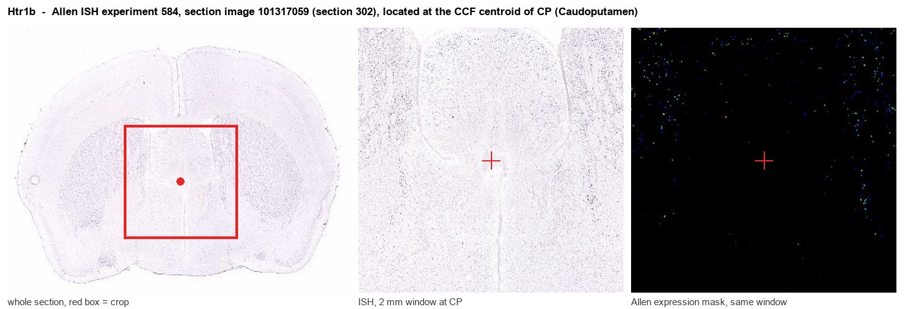
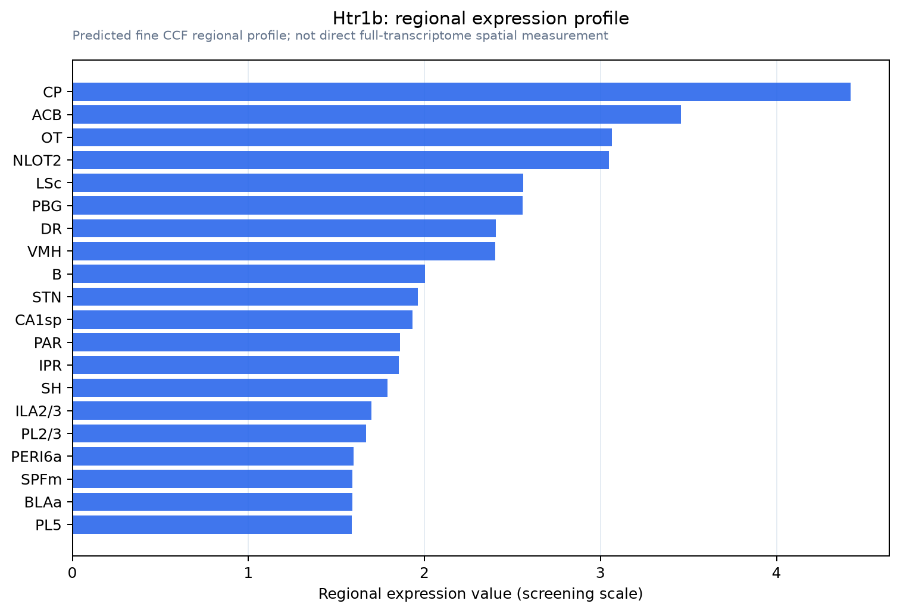

Htr1b
5-hydroxytryptamine receptor 1B (5-HT-1B) (5-HT1B) (Serotonin receptor 1B)
Spatial tier: RESTRICTED · Class: GPCR · Top region: CP (Caudoputamen) · Positive regions: 14/554
43.2Discovery Score
41.2Targetability Score
CEvidence grade C
What this means: Htr1b: fine CCF profile is restricted toward CP (top regions: CP, ACB, OT, NLOT2, LSc; 14 positive regions); direct spatial validation is still required.
Function in CP: evidence, prediction, innovation
- Gene function
- HTR1B is the 5-HT1B serotonin receptor, a Gi/Go-coupled class A GPCR. It inhibits adenylate cyclase and, crucially, is trafficked to axon terminals where it acts as an autoreceptor on serotonergic terminals and as a heteroreceptor on non-serotonergic terminals to suppress neurotransmitter release. It is the target of the triptan antimigraine drugs.
- Region function
- The caudoputamen is the dorsal striatum: GABAergic D1 direct-pathway and D2 indirect-pathway spiny projection neurons receive massive cortical glutamate and nigral dopamine and control action selection, habit formation and motor vigour.
- Published in this region
- direct Direct. 5-HT1B is one of the most abundant receptors in caudoputamen, where it is synthesised by spiny projection neurons and transported to their terminals in globus pallidus and substantia nigra. Ding et al. 2015 showed robust presynaptic 5-HT1B inhibition of striatonigral output that is sensitised after dopamine depletion, and Pommer et al. 2021 showed that 5-HT1B controls lateral inhibition between spiny projection neurons in mouse striatum. Nautiyal et al. 2015 dissociated 5-HT1B contributions to aggression and impulsivity using circuit-restricted rescue, and Neumaier et al. 2002 showed that overexpressing 5-HT1B in accumbens efferents sensitises animals to cocaine.
- Predicted function
- Prediction: the remaining gap is pathway specificity - whether 5-HT1B on direct-pathway versus indirect-pathway terminals has opposite behavioural consequences. Selective deletion of Htr1b from Drd1-Cre versus Adora2a-Cre spiny neurons is predicted to dissociate motor vigour and habit formation from impulsivity: loss from direct-pathway terminals should disinhibit striatonigral GABA release and reduce movement initiation, while loss from indirect-pathway terminals should increase perseverative responding. The 5-HT1B agonist CP-94253 delivered locally should acutely suppress striatal output and slow action initiation.
- Innovation
- ★☆☆☆☆ 1/5 5-HT1B in the dorsal striatum is a classical, heavily worked system with decades of pharmacology, anatomy and knockout behaviour.
- Tools
- Htr1b knockout mice and the tetO-conditional Htr1b knockdown line; Htr1b-Cre and Htr1b-eGFP reporters; agonists CP-94253, anpirtoline and sumatriptan; antagonists GR127935, SB-224289 and NAS-181; radioligand [125I]GTI and PET tracer AZ10419369; Drd1-Cre and Adora2a-Cre for pathway-specific deletion.
- References
Direct evidence located at the region

Allen ISH experiment 584, section image 101317059 (section 302): the section that contains the CCF centroid of Caudoputamen according to the Allen image-to-atlas alignment (reference_to_image), with a 2 mm window around that point. Left: whole section, red box = window. Middle: ISH signal. Right: Allen's expression-mask view of the same window. open this image in the Allen viewer
Look it up yourself: Allen Mouse Brain ISH for Htr1bAllen reference atlas: CP (structure 672)ABC Atlas MERFISH viewer(in the ABC Atlas choose dataset MERFISH-C57BL6J-638850-CCF, colour cells by gene "Htr1b" or by parcellation_substructure "CP")All genes confined to CP + 3-D brain
Direct spatial evidence
MERFISH REGION LOCATOR

Regional expression figure

Predicted WMB × fine-CCF profile; not direct full-transcriptome spatial measurement.
Spatial profile
Evidence and specificity
- Evidence status
- PREDICTED_FINE
- Direct sources
- None; predicted localization only
- Exclusive threshold
- 12 positive regions out of 554
- Spatial specificity
- 0.304
- Top-region fraction
- 0.072
- Filter status
- PASS
Interpretation limits
- Cell-type-to-region projection is imputed expression, not direct spatial measurement.
- Adult reference atlases do not establish stability across age, sex, strain, state, or disease.
- Transcript abundance does not guarantee protein abundance or genetic-tool performance.